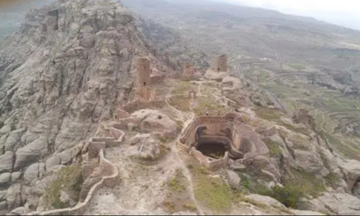
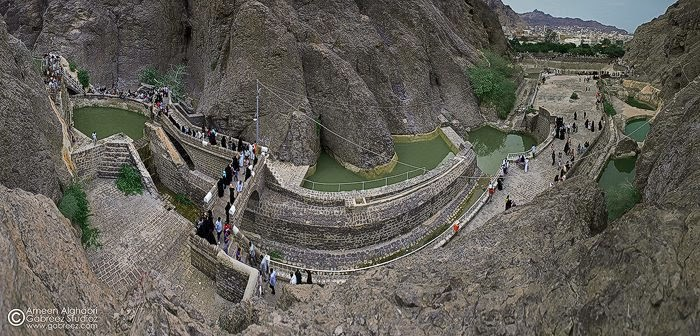
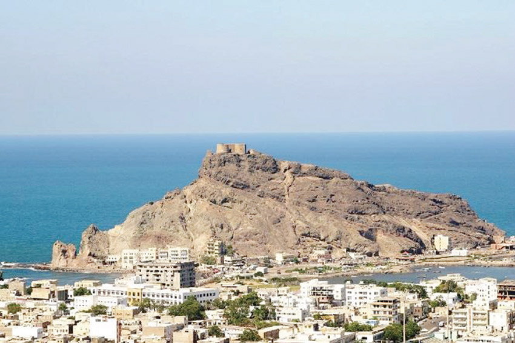
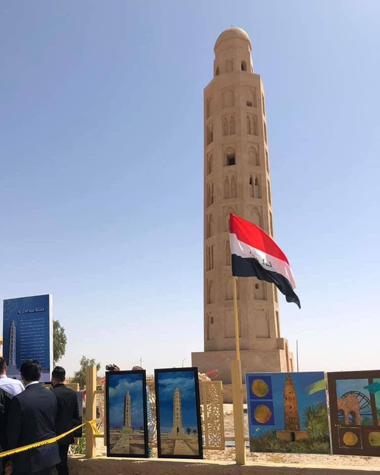
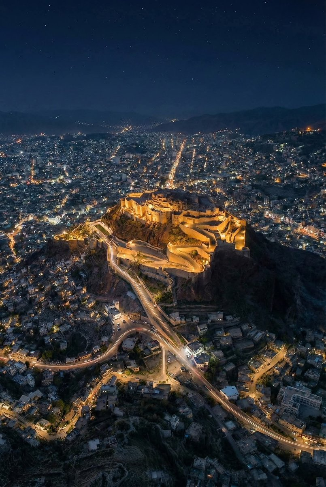
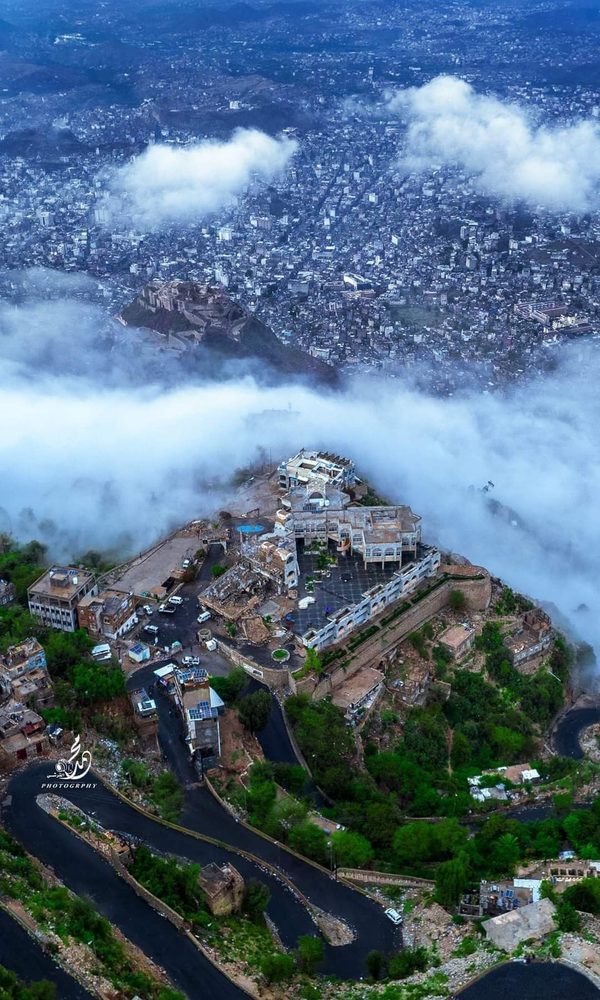

باب اليمن (صنعاء القديمة)
أبرز الأبواب التاريخية لمدينة صنعاء القديمة السور العتيق، المدخل الرئيسي للأسواق التراثية القديمة.
دليل شمول أثر يغطي كبرى وصغرى المعالم التاريخية، الأثرية، والدينية عبر كافة المحافظات والمدن اليمنية
استكشف العمارة، الحصون، المساجد، والأثريات اليمنية العريقة
أبرز الأبواب التاريخية لمدينة صنعاء القديمة السور العتيق، المدخل الرئيسي للأسواق التراثية القديمة.

أكبر صرح إسلامي حديث في اليمن يقع بميدان السبعين، يتميز بمآذنه الشاهقة وعمارته التراثية الفاخرة.

قصر تاريخي بني فوق صخرة صوانية شاهقة في وادي ظهر، ويعد رمزاً معمارياً يمنياً فريداً.

من أقدم المساجد في الإسلام، بُني في عهد الرسول صلى الله عليه وسلم وبجواره مكتبة المخطوطات الأثرية.

حصون أثرية حميرية قديمة تقع على قمم جبال صنعاء الخضراء والمتشابكة مع السحاب.

منظومة هندسية مائية تاريخية في وادي الطويلة لكريتر، صممت للحماية من السيول وتخزين المياه.

حصن عسكري تاريخي شامخ فوق جزيرة صيرة يطل على بحر العرب وميناء عدن التاريخي.

معلم أثري يقع في كريتر يعود تاريخه لأكثر من 1200 عام ويعد أثراً لمسجد قديم اندثر عبر العصور.

حصن تاريخي شامخ يطل على مدينة تعز من السفح الشمالي لجبل صبر، بنيت في العهد الصليحي.

تحفة الدولة الرسولية المعمارية بتعز، يتميز بمآذنه البيضاء وقبابه المزخرفة بالنقول الفنية.

ثاني أعلى جبال اليمن، يضم مدرجات زراعية ومعالم سياحية تطل على كامل مدينة تعز.

مانهاتن الصحراء والأولى عالمياً في بناء ناطحات السحاب من الطين، مسجلة ضمن التراث العالمي اليونسكو.

أكبر قصر مبني من الطين واللبن في العالم بقلب مدينة سيئون، كان مقراً للسلطنة الكثيرية.

معلم سياحي وتاريخي يربط بين البحر والمدينة، بجواره حصن الغويزي التاريخي المقيم فوق الصخرة.

أعمدة المعبد السبئي التاريخي الأبرز، يعود لعهد مملكة سبأ بالقرن العاشر قبل الميلاد.

أعظم معجزة هندسية زراعية في التاريخ القديم، مع السد الحديث المحتفظ بالمياه الحالية.

أكبر معبد أثري قديم في شبه الجزيرة العربية مخصص لعبادة الإله المقه سبأ.

معالم طبيعية وتاريخية ساحرة في اللواء الأخضر تعانق السحاب والمدرجات الخضراء.

عاصمة الدولة الصليحية التاريخية، وتضم جامع ومحراب الملكة أروى بنت أحمد الصليحي.

من أروع الأودية الطبيعية والمعالم السياحية المائية المتدفقة طوال العام.
الرمز الطبيعي النادر جداً الذي لا يوجد في أي مكان على سطح الأرض إلا في جزيرة سقطرى.

أنقى الشواطئ المرجانية والطبيعة البحرية البكر في المحيط الهندي.

حصون وقلاع منيعة في قمم جبال حجة تطل على الوديان والمدرجات الجبلية.

عاصمة العلوم الإسلامية والتاريخية في الساحل التهامي، مسجلة لدى منظمة اليونسكو.

معالم وأطلال عواصم الممالك اليمنية القديمة (شبوة، تمنع، حبان التراثية).

المدينة الطينية التاريخية بسورها القديم ومساجدها الإسلامية التاريخية العريقة.
أعجب الأنفاق الأثرية المنحوتة في الجبال لشق الطرق وإمرار المياه من العصر الحميري.